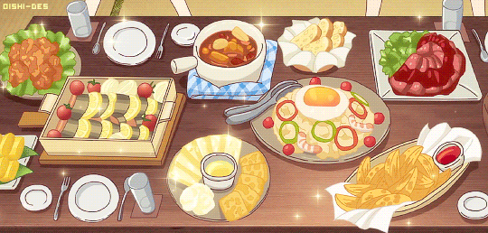

These Recipes Allow You to Recreate the Most Delicious Anime Food You've Ever Seen

Try this 3 recipes on you own!
Furikake Rice - Shokugeki no Souma
Ham Noodles - Ponyo
Cream Stew - The Secret World of Arietty